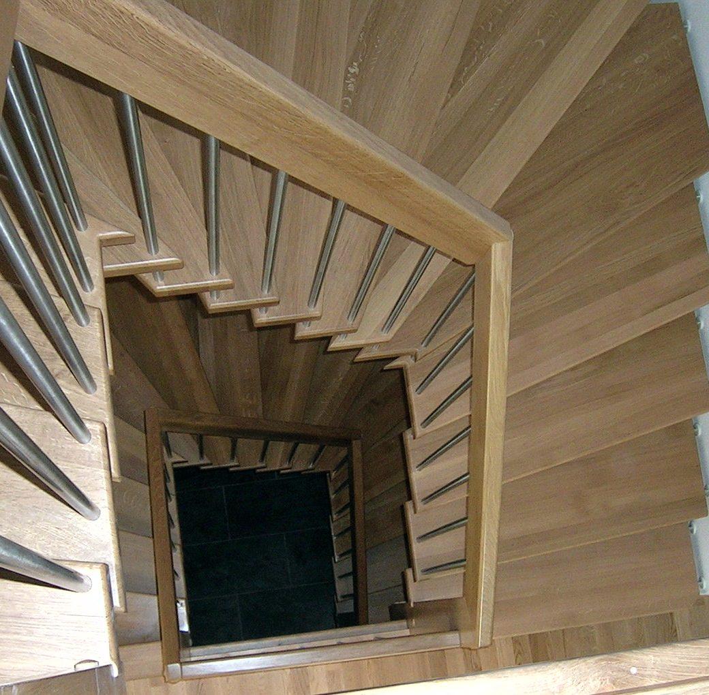
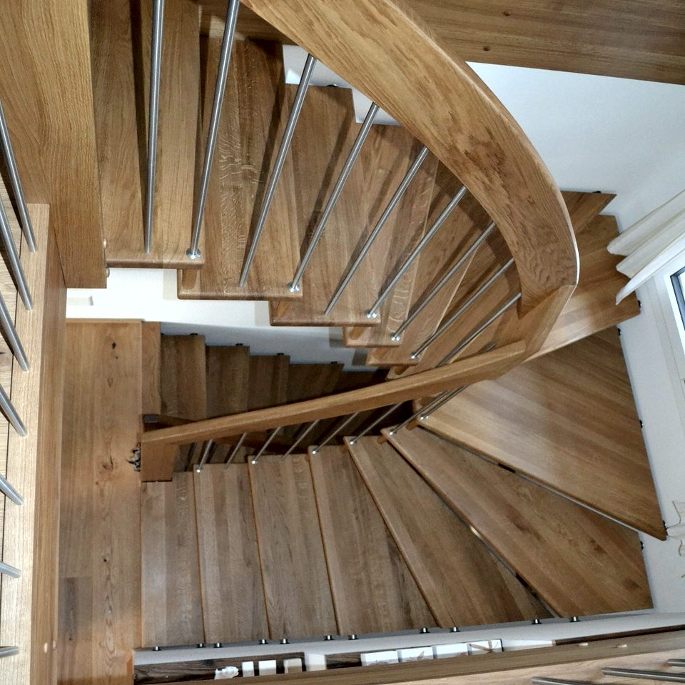
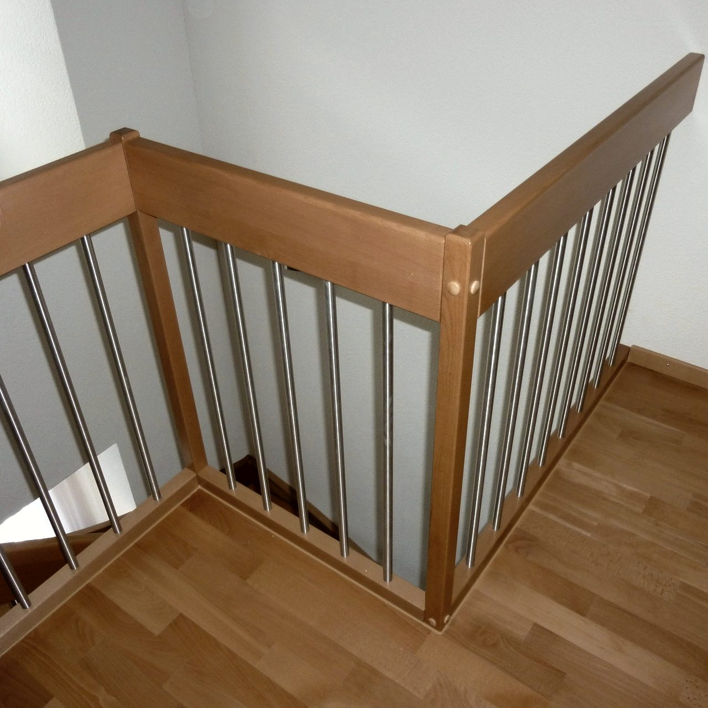
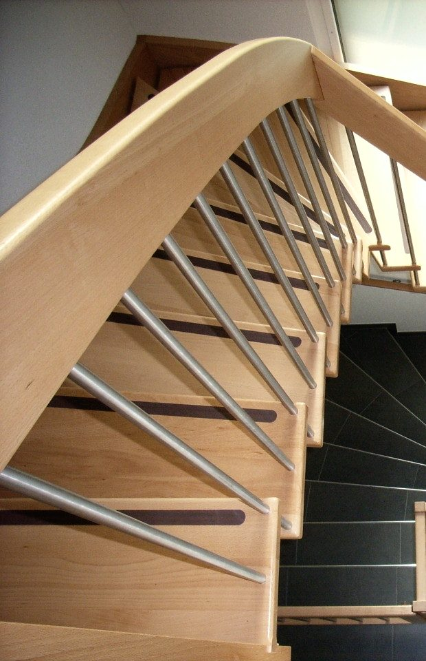
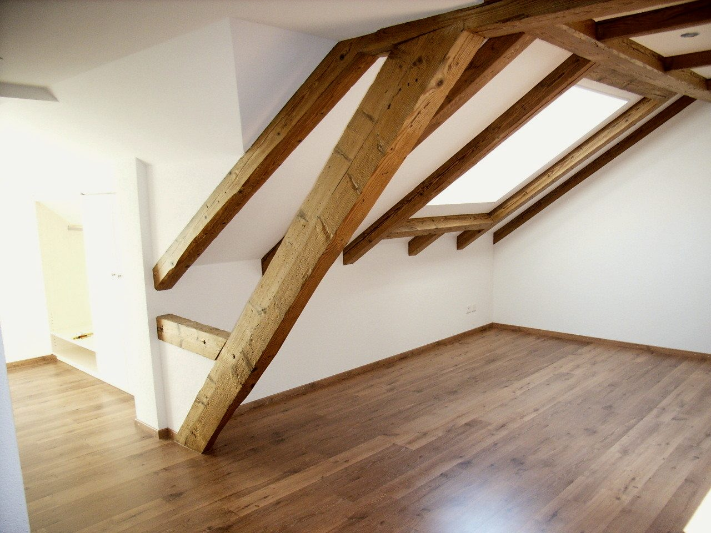
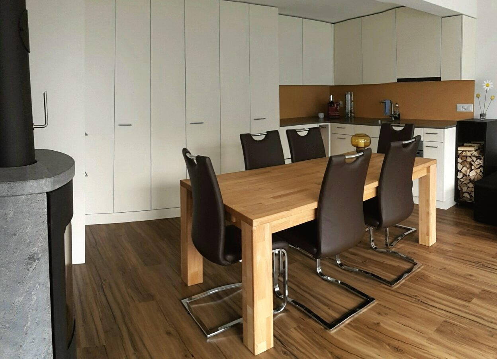
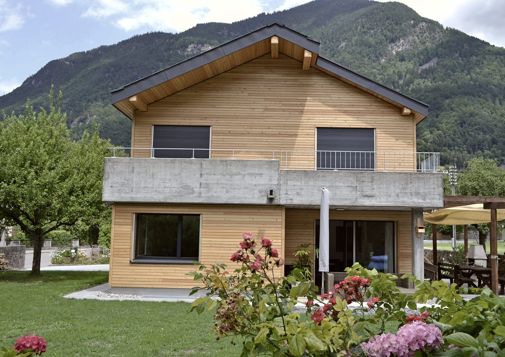
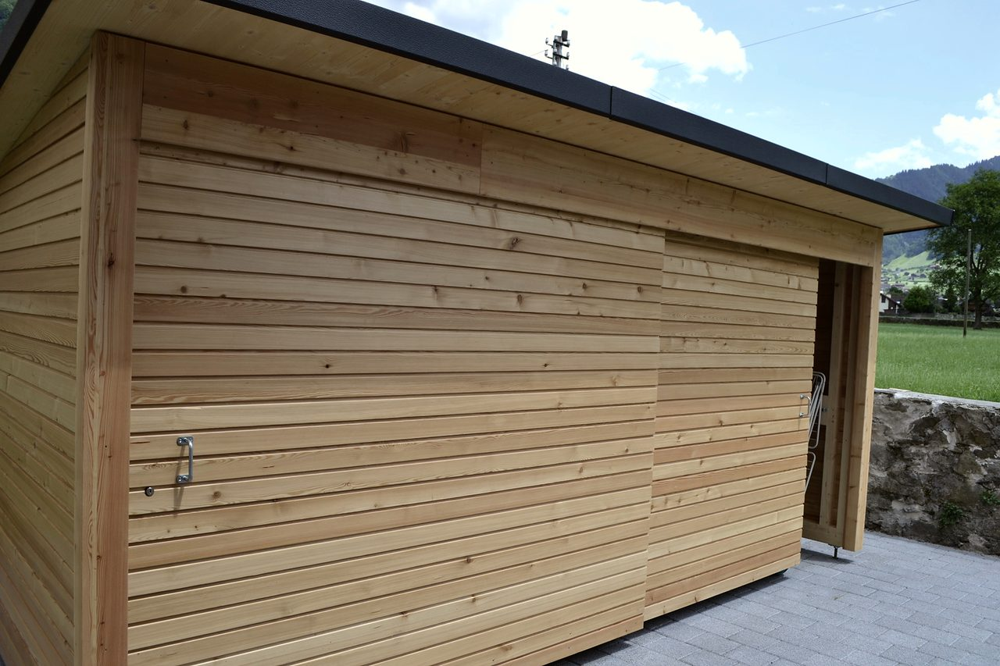
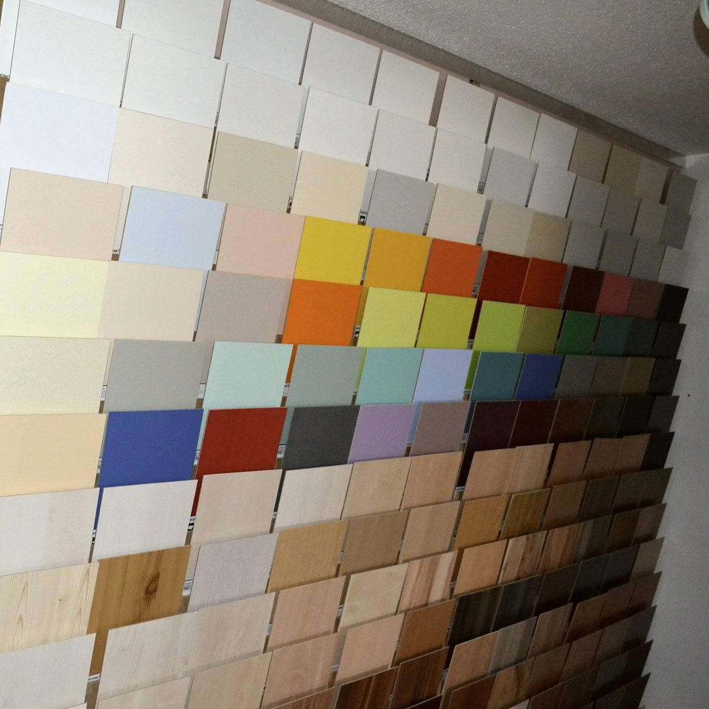

00 · Treppenbau, Schreinerei, Planung
Jede Treppe auf Mass.
Treppen, Schreinerei, Fassaden und Planung aus Spiringen. Seit 1950, heute in dritter Generation.

- Offen
- Übliche Bürozeiten, Termine nach Absprache auch ausserhalb
- Ausstellung
- Drei Räume: Türen, Böden, Treppen, Fenster, Möbel
- Telefon
- 041 879 80 80
01 · Treppenbau
Stufe für Stufe.
Jede Treppe entsteht auf Mass: als Wangentreppe oder freitragend, aus Holz allein oder mit Metall, Chromstahl oder Glas. Geländer und Treppenverkleidungen gehören dazu.



01.1 · Ihre Treppe im Schnitt
Wie viele Stufen hat Ihre Treppe?
Geschosshöhe und Bauart wählen, der Schnitt zeichnet sich neu.
Geschosshöhe (Boden bis Boden)
Bauart
Geländer
- Steigungen
- 15
- Steigung
- 173 mm
- Auftritt
- 283 mm
- Lauflänge
- 3.96 m
Richtwert nach der Schrittmassregel (2 Steigungen + 1 Auftritt ≈ 630 mm), kein Angebot. Gebaut wird jede Treppe auf Ihr Mass.
Beratung vereinbarenIhre Werte gehen in die Anfrage mit.
02 · Schreinerei
Von der Tür bis zur Decke.

Pos.Arbeit
- 01Haus- und Zimmertüren
- 02Schränke und Möbel, Tische und Bänke
- 03Küchen
- 04Bodenbeläge
- 05Wand- und Deckenverkleidungen
- 06Fenster und Fensterfutter
- 07Innenausbau und Spezialanfertigungen
- 08Restaurierung alter Möbel

03 · Fassade und Zimmerei
Holz, das draussen steht.
Fassaden sanieren, dämmen und verkleiden, Balkongeländer und Balkonböden. Als Zimmerei bauen wir Anbauten, Carports, Pergolas und Velounterstände, auf Wunsch auch die Hundehütte.


04 · Planung
Erst der Plan, dann das Holz.
Bei Um- und Neubauten begleiten wir Sie von der Planung über die Bauleitung bis zur Ausführung.
05 · Familie und Lehrbetrieb
Seit 1950 in Spiringen.
- 1950Josef Gisler, ‹dr Stiniger Sepp›, baut in der Rütti ein Haus mit Werkstatt.
- 1974Neue Werkstatt mit Sechsfamilienhaus in Witterschwanden.
- 1981Die Firma wird eine Aktiengesellschaft.
- 1988Die Söhne Max, Sepp und Klaus übernehmen.
- 2011Ueli Gisler, Sohn von Max, führt den Betrieb in dritter Generation.
3
Lernende sind zurzeit im Betrieb, Lehrberuf Schreiner/in EFZ. Zwei haben die Lehre mit den Noten 5.3 und 5.5 abgeschlossen.
06 · Ausstellung und Beratung
Türen, Böden, Treppen zum Anfassen.
Drei Ausstellungsräume an der Klausenstrasse 10 in Spiringen: Türen, Böden, Treppen, Fenster, Möbel und eine Musterkollektion. Beraten wird auf Wunsch auch bei Ihnen zu Hause.

Beratung vereinbaren
Arbeit und Ort wählen, Name und Telefon eintragen: Ihr Mailprogramm öffnet eine fertige Anfrage.
Kontakt
J. Gisler Söhne AG
Klausenstrasse 10
6464 Spiringen
041 879 80 80
mail@gisler-ag.ch
Übliche Bürozeiten, Termine nach Absprache auch ausserhalb.
Die Werkstatt arbeitet zurzeit provisorisch in Attinghausen und nimmt alle Aufträge entgegen. Die Büros bleiben in Spiringen.
Route nach Spiringen